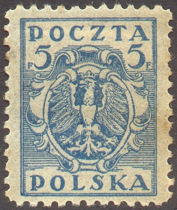
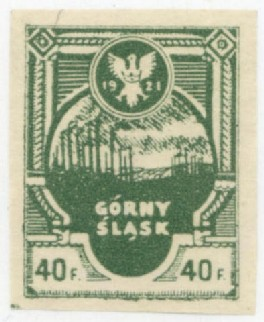

Note: on my website many of the
pictures can not be seen! They are of course present in the
catalogue;
contact me if you want to purchase the catalogue.
5 f blue 10 f violet 20 f red 40 f brown 50 f orange 75 f green
Value of the stamps |
|||
vc = very common c = common * = not so common ** = uncommon |
*** = very uncommon R = rare RR = very rare RRR = extremely rare |
||
| Value | Unused | Used | Remarks |
| All values | vc | vc | |

1 M black 1.25 M green 2 M red 3 M green 4 M blue 5 M brown 6 M orange 10 M brown 20 M violet 50 M olive 80 M red 100 M violet 200 M yellow 300 M blue
Value of the stamps |
|||
vc = very common c = common * = not so common ** = uncommon |
*** = very uncommon R = rare RR = very rare RRR = extremely rare |
||
| Value | Unused | Used | Remarks |
| All values from 1 M to 80 M | c | c | |
| 100 M | c | * | |
| 200 M | c | c | |
| 300 M | c | * | |
Other stamps for Upper Silesia (German part) can be found in Cd 1.


(Reduced size)
The stamps exists in 10 f red, 20 f lilac, 30 f orange, 40 f green, 50 f green, 60 f blue and 1 M brown, perforated and imperforate.
Other issues with 'POCZTA POLOWA GORNY SLASK POWSTANCZA' exist (2 types of 10 M each)
5 f green 10 f brown 15 f red 25 f olive 50 f green 1 K green 1 K 50 brown 2 K blue 2 K 50 violet 5 K blue
Value of the stamps |
|||
vc = very common c = common * = not so common ** = uncommon |
*** = very uncommon R = rare RR = very rare RRR = extremely rare |
||
| Value | Unused | Used | Remarks |
| All values | c | c | |
Imperforate 1 h brown 3 h lilac 20 h blue 25 h lilac 30 h yellow (red overprint) 40 h orange 50 h lilac 50 h blue 60 h red (blue overprint) 75 h green (red overprint) 80 h green (red overprint) 100 h brown 120 h black (red overprint) 200 h blue (red overprint) 300 h green (red overprint) 400 h violet (red overprint) 500 h brown (blue or black overprint) 1000 h lilac (blue overprint) Perforated 1 h brown 5 h green 10 h green 15 h red 20 h red 25 h lilac 30 h lilac (blue overprint) 60 h red (blue overprint) 200 h blue (red overprint)
Value of the stamps |
|||
vc = very common c = common * = not so common ** = uncommon |
*** = very uncommon R = rare RR = very rare RRR = extremely rare |
||
| Value | Unused | Used | Remarks |
| Imperforate | |||
| 1 h | c | * | |
| 3 h | c | * | |
| 20 h | c | ** | |
| 25 h | * | * | |
| 30 h | c | * | |
| 40 h | c | * | |
| 50 h lilac | * | * | |
| 50 h blue | * | * | |
| 60 h | * | * | |
| 75 h | * | * | |
| 80 h | * | * | |
| 100 h | * | * | |
| 120 h | * | * | |
| 200 h | ** | ** | |
| 300 h | ** | ** | |
| 400 h | *** | ** | |
| 500 h | *** | *** | |
| 1000 h | *** | *** | Blue or black overprint |
| Perforated | |||
| 1 h | c | c | |
| 5 h | c | c | |
| 10 h | c | c | |
| 15 h | c | * | |
| 20 h | c | * | |
| 25 h | c | * | |
| 30 h | * | * | |
| 60 h | * | * | |
| 200 h | ** | ** | |
An example of a forged overprint (the 25 h blue stamp was never overprinted):

Another highly dubious overprint

500 h grey on blue (red overprint) 1000 h brown on grey (violet overprint)
Value of the stamps |
|||
vc = very common c = common * = not so common ** = uncommon |
*** = very uncommon R = rare RR = very rare RRR = extremely rare |
||
| Value | Unused | Used | Remarks |
| 500 h | RR | RR | |
| 1000 h | RR | RR | |
(Sorry, no picture available yet)
2 h green 6 h red 10 h lilac 20 h blue 30 h brown
Value of the stamps |
|||
vc = very common c = common * = not so common ** = uncommon |
*** = very uncommon R = rare RR = very rare RRR = extremely rare |
||
| Value | Unused | Used | Remarks |
| 2 h | c | c | |
| 6 h | c | * | |
| 10 h | c | * | |
| 20 h | c | * | |
| 30 h | c | * | |

5 h olive 10 h olive 15 h olive 20 h olive 25 h olive 30 h olive 40 h olive 50 h olive 100 h brown 500 h green 1000 h violet
Value of the stamps |
|||
vc = very common c = common * = not so common ** = uncommon |
*** = very uncommon R = rare RR = very rare RRR = extremely rare |
||
| Value | Unused | Used | Remarks |
| 5 h | c | c | |
| 10 h | c | c | |
| 15 h | c | c | |
| 20 h | c | * | |
| 25 h | c | * | |
| 30 h | c | * | |
| 40 h | c | * | |
| 50 h | * | * | |
| 100 h | * | * | |
| 500 h | ** | *** | |
| 1000 h | *** | *** | |
2 brown 5 green 10 brown and red 20 olive-brown 15 dark brown 25 blue 50 light brown 100 black 200 black 500 red Postage due stamps
2 blue 4 blue Newspaper stamps
3 red 10 red


{kind=link}
{kind=link}